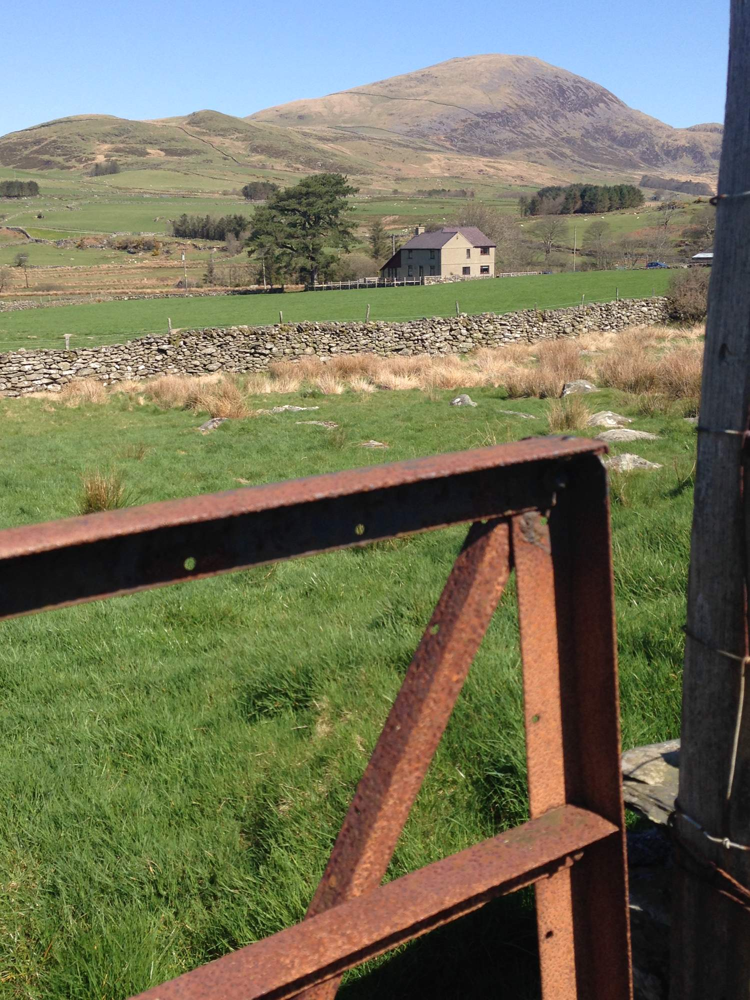

Croeso i Bryn-Weirglodd
A farmhouse in one of the quietest valleys in Eryri
Self-catering for up to 8 guests in Cwmystradllyn, Gwynedd. Ten minutes from the beaches at Criccieth and Porthmadog.
- Sleeps
- 8 guests
- Bedrooms
- 4 (2 double, 2 twin)
- Bathrooms
- Ground-floor wet room and a family bathroom
- Access
- Step-free ground floor, suitable for wheelchair users
- Pets
- Not permitted
The house
Bryn-Weirglodd is a traditional Welsh farmhouse, restored as a spacious self-catering home. It stands on its own in the Cwmystradllyn valley, with sheep grazing in the surrounding fields and Moel Hebog on the skyline.
The large living room looks straight down the valley towards the coast and has a log fire for the evenings. Next door, a country kitchen-diner has an oak table that seats the whole party, and a full set of modern appliances.
Walks start from the front door. The ruins of the Ynysypandy slate mill are just behind the house, and Llyn Cwmystradllyn is a short walk up the lane.
Ground floor
- Living room with log fire and valley views
- Kitchen-diner with oak dining table
- Twin bedroom with patio doors to the garden
- Accessible en-suite wet room
First floor
- Two double bedrooms
- One twin bedroom
- Family bathroom with shower over the bath
Photos
Select a photo to view it full size.
Facilities
Linen, towels, logs for the fire and a welcome pack of local produce are provided.
Accessible for wheelchair users
The ground floor has been designed around guests with limited mobility, so everyone in a group can stay together.
- Ramp to the main entrance
- Flat access and wide doorways throughout the ground floor
- Ground-floor twin bedroom with direct patio access
- En-suite wet room with non-slip floor, roll-in shower, shower seat and grab rails by the toilet and basin
- Profiling bed, bed raisers, mobile hoist and shower chair or commode available on request (charges apply)
Kitchen and dining
- Cooker and hob
- Microwave
- Dishwasher, with tablets
- Fridge and separate freezer
- Kettle and toaster
- Cooking basics, oven gloves and tea towels
- Wine glasses
- Dining table for the whole party
Living and comfort
- Log fire with a bag of logs
- Central heating
- WiFi
- TV and games console
- Washing machine and tumble dryer
- Clothes drying rack
- Hair dryer
- Landline for incoming and emergency calls (mobile signal is limited)
Families
- Cot (bring your own cot linen)
- High chair
- Baby safety gates
- Fireplace guard
- Enclosed private garden
Outside
- Off-street parking
- Private garden
- Barbecue
- Walks from the front door
Safety
- Smoke detectors
- Carbon monoxide detector
- First aid kit
- Fire extinguisher and fire blanket
Location
Bryn-WeirgloddCwmystradllyn
Garndolbenmaen
Gwynedd LL51 9AZ
The house sits inside Eryri National Park, between the mountains and the Llŷn Peninsula coast. A car is needed; the main road is about five minutes' drive away.
- Llyn Cwmystradllynshort walk
- Cricciethabout 3 miles
- Porthmadog (shops and supermarkets)about 5 miles
- Black Rock Sandsabout 15 minutes' drive
- Portmeirionabout 15 minutes' drive
- Caernarfonabout 30 minutes' drive
Nearby you can walk, fish, play golf and go pony trekking, or try mountain biking, gorge walking and white-water rafting.
Open in your maps appCheck availability and book
Bryn-Weirglodd is listed with these booking partners.